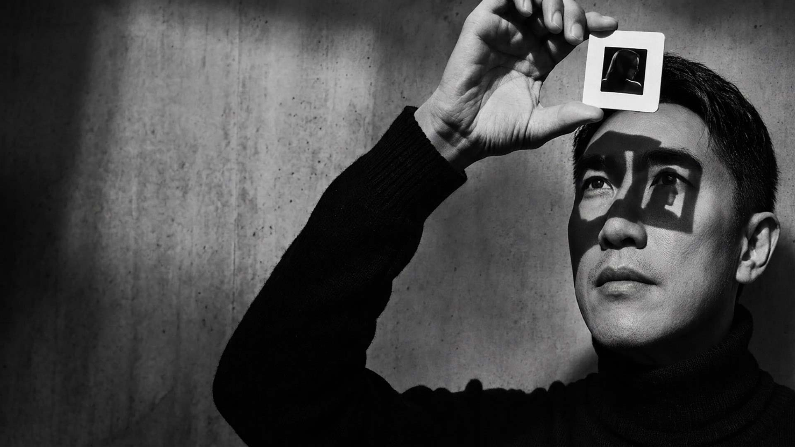
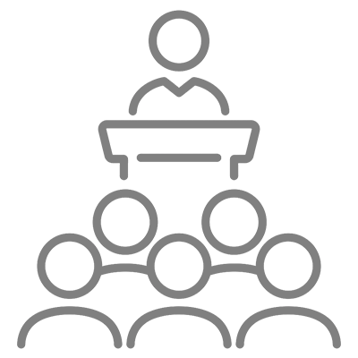

你如何觀看，就投射出你是誰
我想說破的，不只是攝影技巧
那個一直沒有
消失的念頭
那幾年，我是一名材料工程師。下班後常常隨手亂拍。拍著拍著會想起大學時代， 心裡一直有個念頭：比起材料系，我好像更該讀的是攝影系。開會、跟同事溝通時， 我習慣用畫面去思考問題，甚至有同事說我「更像設計師」。 那時候我在一間上市公司做得還不錯，但心裡始終有個聲音提醒我： 我真正的專業，其實是攝影。這些微小的徵兆累積久了，我決定不再忽視它——去學攝影， 成為一名攝影師。後來我才發現，這不只是我一個人的故事。
拍了很多
卻還是
不知道為什麼
很多人學攝影學了很久。學過曝光、構圖、打光，也累積了大量作品。 但最後卻發現：照片拍得更多，卻越來越不知道自己為什麼這樣拍。 看到喜歡的作品，知道它「好看」，卻說不出好在哪裡。模仿過許多風格， 卻仍找不到真正屬於自己的觀看方式。因為攝影真正困難的地方， 從來不只是操作相機。而是看見：什麼元素吸引了你，什麼選擇形成了畫面， 以及如何把內心的感受，轉化成一張影像。 這也是我開始教攝影的原因。我想把那些攝影裡常被忽略， 卻真正影響作品的部分，說明白。
後來重新回到攝影，我開始發現：影像看似感性，但好的作品背後， 同樣存在可以被分析的結構。光線如何塑造空間？色彩如何影響觀看？ 造形、階調、空間與時間，如何共同形成一張影像？當這些元素被看見， 攝影就不再只是依靠模糊的感覺。感受，也能找到它形成的原因。
我相信，攝影不只是記錄世界。它是一種觀看世界的方式。 面對同一個場景，每個人都會做出不同選擇：不同的角度、不同的距離、不同的瞬間。 最後留下的影像，其實也映照出拍攝者自身。所以學攝影，不只是學會控制相機。 更是在探索：你如何看見世界，以及你為什麼如此觀看。
當感覺
開始有了形狀
技術退到身後
觀看才開始
知
我希望學生經歷三個階段：先建立影像的基礎架構。 包含：光線原理、視覺元素、美感結構與影像語彙。 讓你知道：一個畫面為什麼會產生某種效果。
直覺
當大量觀察與練習累積之後，技術不再只是公式。 光線、構圖、色彩與空間判斷，會逐漸內化成創作者的直覺。 你不只是記得方法，而能自然做出選擇。
覺知
最後，在創作時保持覺察。 在按下快門之前，開始思考：為什麼此刻想留下這個畫面？ 為什麼某些元素吸引你？ 攝影不只是看見世界，也是透過影像，看見自己。
當鏡頭對著
一個人的時候
人像攝影一直是我主要的創作媒介。因為拍攝一個人時， 你面對的不只是光線、構圖與技術。 還包含：人的存在、情緒、姿態，以及攝影者與被攝者之間的關係。 一張好的肖像，不只是把人拍漂亮。而是讓一個人的某種狀態，被真正看見。 拍攝角度會改變一個人在畫面裡的姿態與力量感； 一個手勢的鬆緊，會洩露出他當下是防備還是自在； 快門按下的前一秒和後一秒，往往是完全不同的表情。 這些選擇沒有標準答案，全部取決於你當下怎麼判斷眼前這個人。
每一次要怎麼挖這個「洞」，沒有固定公式，得看當下這個人的狀態去調整。 這也是為什麼我常說，人像攝影教不會的部分，往往比教得會的部分更重要。 因此，我選擇以人像攝影作為教學核心。因為真正的攝影能力，不是背誦方法。 而是在創作現場中，知道該如何做出選擇。
那些走過的路
最後都有了答案
從商業攝影、影像製作，到攝影教育。十五年的影像工作經驗， 讓我累積了不同面向的實戰經驗： 商業攝影流程、人像創作、燈光設計、視覺分析，以及攝影教學中的系統整理。 這些經歷讓我更加確定：真正重要的，不是讓一個人學會更多技巧。 而是讓他知道，自己正在創造什麼。
-
視丘攝影藝術學院講師
-
IPA、PX3 國際攝影獲獎
-

企業攝影培訓講師
最後凝視的
其實是自己
我常想起一張作品。Peter Lindbergh 晚期的黑白女性肖像裡， 被攝者的眼神總帶著一種近乎靈魂的優雅——不是姿態擺出來的，而是一種內在狀態， 恰好在那個瞬間被鏡頭接住了。我後來明白，那樣的眼神不會憑空出現。它能被看見， 是因為攝影師先用自己的凝視去接近了對方——把自己內在真正在意的東西， 投射進觀景窗裡，才有機會讓對方也把最真實的狀態交出來。 所以「凝視」，從來不只是觀看被攝者。而是攝影師把自己內在的狀態， 向外投射成一種物質的實相——那雙留在照片裡的眼神， 其實也映照著按下快門的人。
「凝視」，是觀看，也是覺察。「潛像」，是已經存在，但尚未被看見的東西。 每一張照片背後，都有拍攝者尚未察覺的選擇。 你的審美、經驗、價值與情緒，都會透過影像留下痕跡。 攝影的過程，就是讓那些原本存在，卻尚未浮現的部分，逐漸被看見。 我在這裡，把我知道的說明白。攝影不只是按下快門。 它是一種探索世界，也探索自己的方式。
Photo by Thoai3000, CC BY-SA 4.0, via Wikimedia Commons
我的肖像作品更多地是關於我自己 ，探索課程 >
而不是關於我拍攝的人